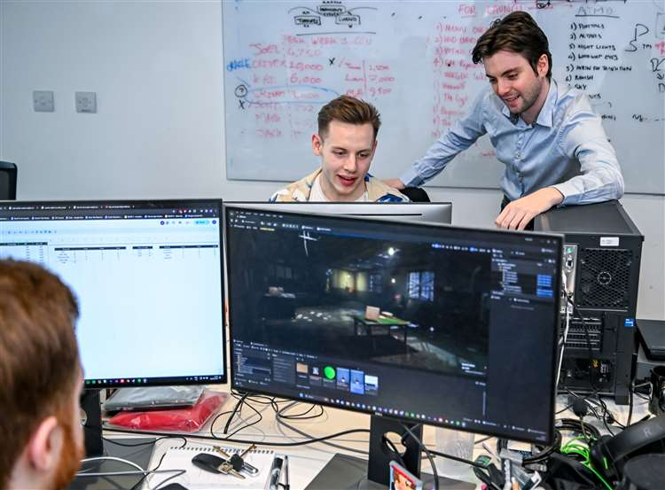
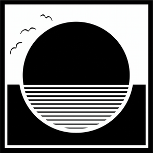
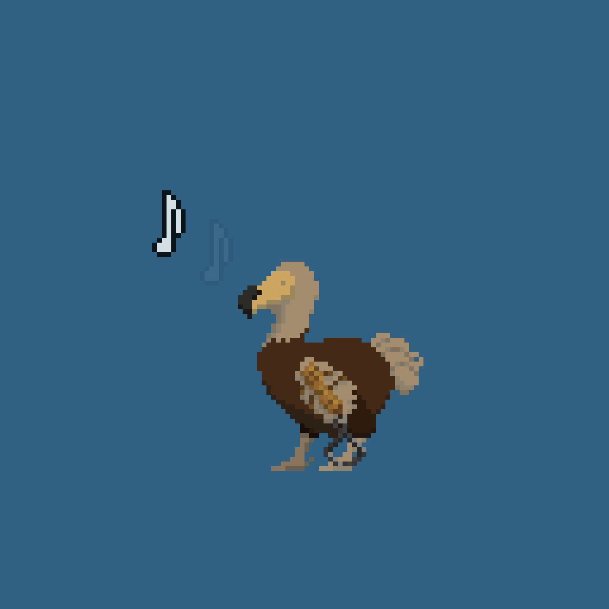
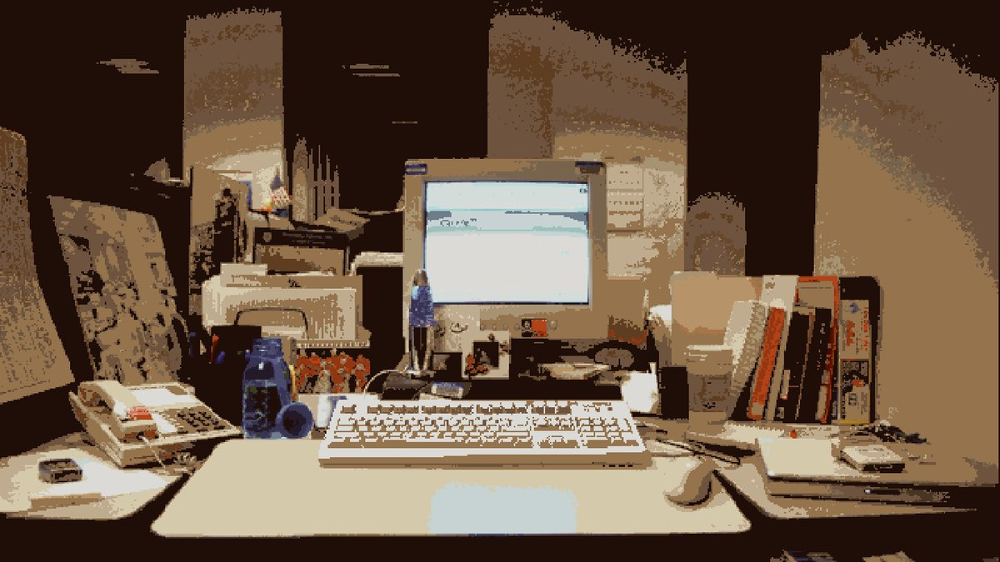
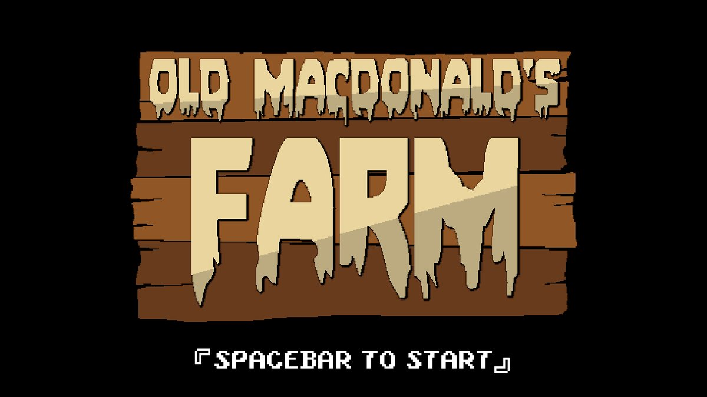

Cross-Discipline Leadership
Communicating design vision across art, engineering and production, including coordination of local and international outsourcing teams.
Technical Gameplay Designer
Gameplay Designer specializing in implementing design into Unreal Engine. Highly adept at collaborating across disciplines; bridging the gap between engineering, art, and production. Proven track record of shipping maps, features, and DLCs.
Based in Cambridge, UK. Currently a Gameplay Designer at World Makers.
Career
Four years of professional game dev experience and one year of serious hobby-ing.
Top Skills
Communicating design vision across art, engineering and production, including coordination of local and international outsourcing teams.
Coordinating playtesting and community feedback loops, and feeding the results back into data-informed iteration.
Prototyping through to feature ownership across the full design-to-release pipeline. This includes DLCs, maps, new game features amd balancing patches, and live service content.
Jan 2025 — Present
World Makers, Cambridge

Oct 2022 — Jan 2025
World Makers, Cambridge
Jun 2019 — Oct 2020

Astral Dawn Studios, Windsor

Selected Work
A mix of professional studio work and personal projects.
Professional Credits · World Makers
Shipped
A shipped, live-service social deduction horror game, where I worked as a Gameplay Designer at World Makers.
In Development
An original massive-scale PvE shooter, currently in development at World Makers' Cambridge studio. Set in a full-scale recreation of London.
I was involved in designing the macro gameplay loop mission system, the creature spawning system, and creature design, and I designed and implemented individual missions.
Co-Founded · 2019–2020
An indie studio I started with two friends, working in Unity. We began with Astral Dawn, an ambitious JRPG — and learned the hard way that the scope was too broad for a three-person team. We shelved it and built Dodo Alone instead: a smaller, sharper 2D platformer about the extinction of the dodo, which we took to a public demo release.
I led art direction and self-directed development alongside the founders, and produced devlogs and Unity animation tutorials to bring the community along with us.
Game Jams

June 2021
Built with three university friends in 48 hours on the theme "Joined Together." You play a journalist balancing finances against polarising, clickable articles. Ranked 860th of 5,800+ entries and 423rd for Presentation, the part of the project I led.

Ludum Dare 44
A tower-defence game built around "Life is Currency," in the spirit of Plants vs. Zombies. Five animals defend the farm against waves of attackers stealing your livestock. A useful lesson in realistic scope under time pressure.
Background
Sep 2018 — Jun 2022
Master of Computing, Games Engineering — First Class Honours
An MEng focused on C++, with a networking module, a Master's dissertation on procedural animation using Unreal Engine, and a separate Bachelor's dissertation on procedural city generation.
Sep 2013 — Jul 2018
Secondary School
Let's talk